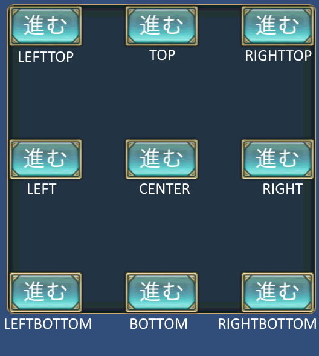
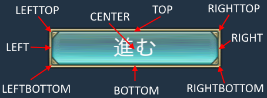

コントロールの配置について¶
アンカー：¶
ウィンドウ上の原点位置をコントロール毎に設定可能です。
その原点位置から、相対座標を用いてコントロールの位置を指定できます。
これによって、ウィンドウサイズが変わっても、レイアウトが崩れずらいウィンドウを作ることが可能になっています。
ウィンドウシステムでは、この原点位置の指定をアンカーと呼んでいます。
アンカーは、下図の通り9か所から自由に設定可能です。
ベースポジション:¶
コントロールの中心位置を自由に設定できます。
中心位置の指定は、下図の通り9か所から設定可能です。
アンカーとベースポジションの関係¶
アンカーに応じて、ベースポジションのデフォルトが決まっています。
例えば、アンカーが左上に設定されるとベースポジションも左上に設定されます。
自動的に設定される値以外のベースポジションを指定したいときは、明示的に設定してください。
以下にアンカーが設定されたときに自動的に設定されるベースポジションの値を列挙しておきます。
| アンカー | ベースポジション |
|---|---|
| ANCHOR_DEFAULT | BASE_DEFAULT |
| ANCHOR_LEFTTOP | BASE_LEFTTOP |
| ANCHOR_LEFT | BASE_LEFT |
| ANCHOR_LEFTBOTTOM | BASE_LEFTBOTTOM |
| ANCHOR_TOP | BASE_TOP |
| ANCHOR_CENTER | BASE_CENTER |
| ANCHOR_BOTTOM | BASE_BOTTOM |
| ANCHOR_RIGHTTOP | BASE_RIGHTTOP |
| ANCHOR_RIGHT | BASE_RIGHT |
| ANCHOR_RIGHTBOTTOM | BASE_RIGHTBOTTOM |